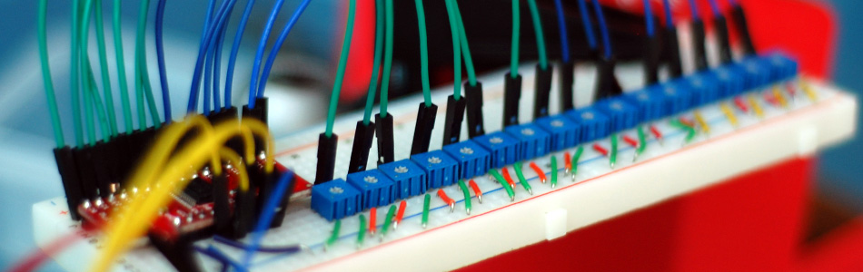

Muxing Around With The CD74HC4067 + Arduino

The CD74HC4067 is a 16-Channel Analog Multiplexer/Demultiplexer. It is available in a breadboard-ready DIP package, or, if you are as addicted to breakout boards as I am, SparkFun offers a breakout board SSOP version. What it allows you to do is use 4 digital pins, to control the flow of one pin to 16 others. It can actually be used in either direction, and even with serial or other digital interfaces. For this tutorial we are just going to read the value from 16 pots because buying 16 analog sensors for this would have been overkill.
A multiplexer of this sort really just acts as a 16 to one 1 switch. The 4 digital pins are used to set HIGH or LOW, in a binary fashion (0-15) to determine what pin "SIG" is connected to. So bringing all 4 pins LOW would switch the CD74HC4067 to channel 0 (so SIG and C0 would be connected), bringing them all HIGH would switch it to 15 (so SIG and C15 would be connected). It is simple binary, but in the off chance you are one of the 99.8% of the world who doesn't know binary, here is a simple table on the right.
0000 - 0
1000 - 1
0100 - 2
1100 - 3
0010 - 4
1010 - 5
0110 - 6
1110 - 7
0001 - 8
1001 - 9
0101 - 10
1101 - 11
0011 - 12
1011 - 13
0111 - 14
1111 - 15
The schematic may seem complicated, but it is not. Not at all. And to prove it, look at the version on the left with out the pots; Much easier, right? The potentiometers are just connected with to ground and 5v, and the middle pin connected to one of the 16 channels on the CD74HC4067. 16 pots is just enough to make anything look scary little scary. Also of note is the EN, or enable, pin. The EN pin is a kill switch: pull it up to 5v to disable all channels, and ground it to enable them. Im just going to leave it at ground so we can use it and simplify things, but feel free to connect it to a digital pin, and control when the mux is enabled or disabled.
{kind=link}
{kind=link}
For the code example I just took the binary table, made it into a simple array, and put it in a function that does this: You give the function a number 0-15. It looks up that number in the binary array, then it loops through those 4 numbers and sets S0, S1, S2, and S3 appropriately. (In the arduino software HIGH is the same as1 & LOW is the same as 0). After it sets the pins so that SIG is connected to the correct channel, it then reads analog 0 (where SIG is connected to) and returns that value. So all you need to do is something like this
//switch mux to channel 15 and read the value int val = readMux(15);
Here is the complete code. It loops through each channel on the mux, reads the value, then prints the value in the serial monitor.
//Mux control pins int s0 = 8; int s1 = 9; int s2 = 10; int s3 = 11; //Mux in "SIG" pin int SIG_pin = 0; void setup(){ pinMode(s0, OUTPUT); pinMode(s1, OUTPUT); pinMode(s2, OUTPUT); pinMode(s3, OUTPUT); digitalWrite(s0, LOW); digitalWrite(s1, LOW); digitalWrite(s2, LOW); digitalWrite(s3, LOW); Serial.begin(9600); } void loop(){ //Loop through and read all 16 values //Reports back Value at channel 6 is: 346 for(int i = 0; i < 16; i ++){ Serial.print("Value at channel "); Serial.print(i); Serial.print("is : "); Serial.println(readMux(i)); delay(1000); } } int readMux(int channel){ int controlPin[] = {s0, s1, s2, s3}; int muxChannel[16][4]={ {0,0,0,0}, //channel 0 {1,0,0,0}, //channel 1 {0,1,0,0}, //channel 2 {1,1,0,0}, //channel 3 {0,0,1,0}, //channel 4 {1,0,1,0}, //channel 5 {0,1,1,0}, //channel 6 {1,1,1,0}, //channel 7 {0,0,0,1}, //channel 8 {1,0,0,1}, //channel 9 {0,1,0,1}, //channel 10 {1,1,0,1}, //channel 11 {0,0,1,1}, //channel 12 {1,0,1,1}, //channel 13 {0,1,1,1}, //channel 14 {1,1,1,1} //channel 15 }; //loop through the 4 sig for(int i = 0; i < 4; i ++){ digitalWrite(controlPin[i], muxChannel[channel][i]); } //read the value at the SIG pin int val = analogRead(SIG_pin); //return the value return val; }
Not just for reading
The CD74HC4067 is capable of more than reading analog signals. It can be uses in either direction. So you could connect SIG to 5v, and then be able to switch the 5v to one of 16 channel pins if you needed to control 16 relays. It also works with serial. So... if you had 16 RFID readers that output serial, you could connect the SIG pin of the CD74HC4067 to digital 0 on the arduino (Serial RX pin) and the serial out of an RFID reader to one of the channels and be able to read from all 16 RFID readers.
The CD74HC4067 is a super simple to use bidirectional mux that can make your life a lot easier. So please, put this to good use, and don't let me see you controlling 16 LEDs with it.
Article taken from bildr.org with minor changes - I am the original author of this content